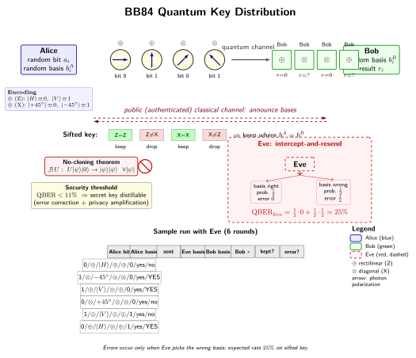

量子密钥分发为什么"不可破解"?
上一节我们看到, 全息术把光的振幅和相位一起记录下来, 于是单片底片里藏着一整个三维物体. 但我们也顺带发现: 记录光的全部信息意味着我们可以从中恢复出原始光场 — 换句话说, 经典的光波, 我们可以随心所欲地读取、复制、再播放.
这正是经典通信的基础, 却也是所有加密方案的阿喀琉斯之踵. 任何在经典信道上传递的信号, 原则上都可被窃听者悄无声息地复制一份, 破译留给以后慢慢做. 当对方的算力足够大, 今天看起来牢不可破的 RSA, 也可能在未来被一台量子计算机撬开. 于是一个很自然的问题出现了: 有没有哪种加密, 它的安全不依赖"计算上难", 而是依赖物理定律本身的不可绕过?
本节要讲的, 就是这样一种方案 — 量子密钥分发 (Quantum Key Distribution, QKD). 它的安全感来源于一条再朴素不过的量子公理: 你不能完美复制一个你不知道的量子态. 这条公理加上 Bennett 和 Brassard 1984 年设计的一个聪明协议, 就让窃听者无论多聪明, 都会在信道里留下自己的指纹.
一、经典密码的软肋: 从 RSA 到 Shor
先把经典密码学的底色交代清楚. 以今天互联网最常见的 RSA 为例, 它的安全性来自一个看似简单的事实: 把两个大素数 $p, q$ 乘起来得到 $N = pq$ 很容易, 但反过来, 给你 $N$ 想分解出 $p$ 和 $q$, 则在经典计算机上极其费劲 — 对 2048 位的 $N$, 用当代最快的数论筛法, 需要远超宇宙年龄的时间.
注意关键词: "极其费劲". 这是一个计算复杂度的假设, 不是一个物理定理. 它的安全是相对的 — 相对于我们今天的算法和硬件. 一旦算法变聪明了, 或者硬件范式变了, 这条底线就会松动.
1994 年, Peter Shor 给出了这样一个"范式变了"的结果. 在量子计算机上, 他设计出一个多项式时间的大数分解算法. 也就是说, 如果哪一天有一台足够大的容错量子计算机跑起来, 所有依赖 RSA 的加密, 包括你此刻银行卡背后、护照芯片里、https 握手中的那些, 原则上都将被一举攻破. 更糟糕的是, 窃听者今天就可以把你的密文存下来, 等二十年后算力到位再解 — 这叫做"先存后解 (harvest-now, decrypt-later)"攻击.
于是一个更根本的问题浮出水面: 我们能不能把加密的安全, 从"某个数学问题算不出来"这种假设, 搬到"某条物理定律不允许"这种地基上? 经典世界里找不到这样的定律 — 任何经典信号都可以被无损复制. 但量子世界里有一条: 不可克隆定理.
二、不可克隆定理: 为什么光子不能被完整复印?
1982 年, Wootters 和 Zurek, 以及独立地 Dieks, 证明了以下事实: 不存在一个幺正演化 $U$, 使得对任意未知量子态 $|\psi\rangle$ 都有
$$U\,|\psi\rangle \otimes |0\rangle \;=\; |\psi\rangle \otimes |\psi\rangle. \tag{1}$$
也就是说, 不存在一台"通用量子复印机", 可以把任意一个输入态 $|\psi\rangle$ 完整复制成两份相同的 $|\psi\rangle$. 证明一行就能写完, 异常优雅. 假设存在这样的 $U$, 对两个不同的态 $|\psi\rangle$ 和 $|\phi\rangle$:
$$U\,|\psi\rangle|0\rangle = |\psi\rangle|\psi\rangle, \qquad U\,|\phi\rangle|0\rangle = |\phi\rangle|\phi\rangle.$$
取两式的内积, 并利用幺正演化保内积这一事实:
$$\langle\psi|\phi\rangle \;=\; \bigl(\langle\psi|\phi\rangle\bigr)^2.$$
这要求 $\langle\psi|\phi\rangle$ 只能等于 0 或 1, 即两个态要么完全正交, 要么完全相同. 但一般的量子态之间, 内积是任意复数. 矛盾. 所以 $U$ 不存在.
这一结果的物理意义非常重大. 经典世界里, 我把你的信号接一个示波器, 再转一份发出去, 你完全感知不到 — 因为电压、电流这些经典量, 测量不改变它们. 但量子世界里, "接一个示波器"这件事本身就是一次测量, 而测量一般会改变态; 更要命的是, 你不能把原态存下来 "先瞧一眼再决定发不发" — 复制是不允许的. 所以任何想在信道里偷看一份的窃听者, 都面临两难: 要么不测量 (那她什么信息也拿不到), 要么测量 (那她就扰动了原态, 注定会被发现).
这是整个 QKD 的物理地基. 剩下的事情就是设计一个协议, 把这条地基变成一个切实可操作的密钥交换方案.
三、BB84 协议: 用两组基把 Eve 逼到墙角
1984 年, 在 IBM 工作的 Charles Bennett 和蒙特利尔的 Gilles Brassard 给出了第一个完整的 QKD 协议, 后来以他们名字和年份命名为 BB84. 他们用的物理载体是单光子的偏振.
光子的偏振是一个二维的量子比特: 取一组基 $\mathsf{Z} = \{|H\rangle, |V\rangle\}$ 表示水平/竖直, 另一组基 $\mathsf{X} = \{|+45°\rangle, |-45°\rangle\}$ 表示对角线. 这两组基互为"共轭", 即
$$|\pm 45°\rangle = \tfrac{1}{\sqrt{2}}\bigl(|H\rangle \pm |V\rangle\bigr).$$
如果你用 $\mathsf{Z}$ 基测一个 $|+45°\rangle$ 态, 结果以 50%/50% 的概率得到 $|H\rangle$ 或 $|V\rangle$ — 信息被完全打乱.
协议步骤如下. Alice 想给 Bob 传一串随机密钥比特 $a_i \in \{0,1\}$:
- 发送: 对每一比特 $a_i$, Alice 随机选一个基 $b_i^A \in \{\mathsf{Z}, \mathsf{X}\}$, 按下表编码后发送一个单光子:
- 基 $\mathsf{Z}$: 比特 0 → $|H\rangle$, 比特 1 → $|V\rangle$;
- 基 $\mathsf{X}$: 比特 0 → $|+45°\rangle$, 比特 1 → $|-45°\rangle$.
- 测量: Bob 独立且随机地选一个基 $b_i^B \in \{\mathsf{Z}, \mathsf{X}\}$ 测量收到的光子, 记录结果 $r_i \in \{0,1\}$.
- 基比对: 全部光子收完后, Alice 和 Bob 在公开 (但被认证过的) 经典信道上, 互相公布每一次用了哪个基, 但不公布比特值. 保留 $b_i^A = b_i^B$ 的那些位置, 其他丢掉. 大约一半被丢掉, 留下的这部分叫"筛选后的密钥 (sifted key)", 在无噪声、无窃听情况下应该完全一致.
- 错误率估计: Alice 和 Bob 随机抽出筛选后密钥中的一小部分公开比较, 估算量子误比特率 QBER. 用过的这部分弃掉.
- 纠错与隐私放大: 对剩下的密钥先做经典的纠错, 再做隐私放大 (privacy amplification), 用一个随机散列函数把 $n$ 位筛选密钥压缩成更短的 $k$ 位最终密钥, 使 Eve 关于这 $k$ 位的信息量指数级趋近于零.
协议的精巧之处在于第 1、2 步. Alice 和 Bob 都随机选基, 使得 Eve 没有办法"事先知道这一次应该用哪个基". 她只能也随机选基, 而她选错基的概率是 50%.

四、Eve 的宿命: 25% 错误率与 11% 阈值
我们来具体算一次, 看看 Eve 偷听后错误率为什么一定是 25%. 考虑最简单的 "截获-重发 (intercept-resend)" 攻击: 每当一个光子飞过, Eve 就随机选一个基测量它, 根据结果再按同一个基重新制备一个光子发给 Bob. 这是她能做到的最好情形 — 测量是不可逆的, 重发也无法恢复原态.
把整个过程按"Alice 的基 vs Eve 的基"分两种情况:
- Eve 选对基 (概率 1/2): 她的测量不扰动 Alice 的态, 重发的光子也和原态相同. Bob 若也选对基, 一定测到正确比特, 错误率 0.
- Eve 选错基 (概率 1/2): 她的测量把 Alice 的态投影到她自己的基上, 重发的光子是一个 Alice 基下完全随机的叠加态. Bob 若恰好选 Alice 的基 (在筛选保留的位置上 Bob 一定选 Alice 的基), 测量结果以 50%/50% 随机落到两个本征态上 — 50% 概率错.
于是在筛选后的密钥上, 总错误率为
$$\mathrm{QBER}_{\text{Eve}} = \tfrac{1}{2}\cdot 0 + \tfrac{1}{2}\cdot \tfrac{1}{2} = \tfrac{1}{4} = 25\%. \tag{2}$$
这是一个干脆利落的结果. Alice 和 Bob 只需在抽样比对时看到 $\sim 25\%$ 的错误率, 就可以断定信道里有东西不对, 这次协议作废, 全部密钥丢掉重来即可. Eve 一比特信息都带不走.
实际协议还要面对一个扰人的问题: 真实信道本来就有噪声, 光纤双折射抖动、探测器暗计数、模式失配, 都会贡献一些无辜的错误. 这时 Alice 和 Bob 没法分辨"这 3% 的 QBER 是 Eve 还是噪声". 保守的做法是: 把所有错误都算给 Eve. 信息论分析 (Shor-Preskill, Csiszár-Körner 定理) 给出一个阈值 — 对 BB84, 只要 $\mathrm{QBER} \lesssim 11\%$, 经过经典纠错与隐私放大之后, 仍然可以提炼出一段 Eve 一无所知的最终密钥. 超过这个阈值, Eve 掌握的信息就超过了 Bob, 无法再压缩到安全.
这里值得做一次极限检验. 考虑信道完全丢失的极端情形: Bob 什么都没收到, QBER 定义不存在, 但"0 比特的密钥"确实也是绝对安全的 — 没有信息传递, 自然没有信息泄露. 反过来, 在无噪声、无窃听的理想极限下, QBER = 0, 隐私放大前后密钥长度接近一致, 协议效率达到 50% (基比对丢掉一半). 两端极限都自洽, 说明 11% 这个阈值是一个真实的中间带, 描述的是"噪声多到 Eve 有可能混在里面伪装自己"的临界点.
五、实际极限与历史: 从 Wiesner 的手稿到墨子号卫星
BB84 写在纸上是一回事, 做出实物是另一回事. 真实世界里, 单光子源并不完美 (激光总是以弱相干态近似单光子), 光纤有损耗 (每公里约 0.2 dB), 探测器有暗计数. 这些非理想因素决定了 QKD 的实际极限.
最突出的是距离. 光纤 QKD 中, 光子数平均每大约 50 km 衰减一半, 即
$$P_{\text{到达}} \approx 10^{-\alpha L/10}, \qquad \alpha \approx 0.2\ \mathrm{dB/km}.$$
这是一个"对数衰减": 距离加倍, 到达概率平方衰减. 当探测器的暗计数率达到信号的同一量级时, QBER 陡然上升, 协议就失效. 加上 Pan Jianwei 组等贡献的"诱骗态 (decoy state)"协议防御光子数分割 (PNS) 攻击、以及超导纳米线单光子探测器 (SNSPD) 的超低暗计数, 目前光纤 QKD 的可用距离大约在 500 km 量级. 想要更远, 只能靠量子中继器 — 基于纠缠交换的一种"量子复读机", 但它要求长寿命量子存储, 至今仍在实验室阶段.
真正突破距离的, 是走到太空. 2016 年 8 月, 中国发射了世界上第一颗量子科学实验卫星"墨子号 (Micius)", 潘建伟团队在 2017 年演示了从卫星到河北兴隆、青海德令哈两个地面站的 1200 km 级纠缠分发 (基于 Ekert 1991 年提出的 E91 协议), 并实现了卫星-地面的 BB84 密钥分发, 密钥速率约每秒几 kb, 测得 QBER 大约 3%, 远低于 11% 的安全阈值. 这是一个把纯粹量子力学原理带到千公里尺度的里程碑 — 真空中空间衰减主要是几何发散, 比光纤指数衰减友好得多.
回头看历史, QKD 这条思路的源头比 BB84 还早十多年. 上世纪 70 年代初, 哥伦比亚的研究生 Stephen Wiesner 写了一篇"共轭编码 (Conjugate Coding)"手稿, 里面提出用两种互斥基的量子态做"量子钞票", 无法被伪造. 这篇手稿被三家期刊退稿, 最终到 1983 年才发表. Bennett 读到后, 和 Brassard 讨论, 发现这个想法可以从"不可伪造"转用到"不可窃听", 于是有了 1984 年印度班加罗尔会议上那篇开创性的 BB84 论文. 1991 年, Oxford 的 Artur Ekert 又提出 E91, 用纠缠对的 Bell 不等式违背直接证明无窃听 — 思想比 BB84 更彻底, 因为它把安全性连到比"态不可克隆"更深的非定域关联上.
小结
在本书"光是什么"的整部追问里, 我们前面大多数章节都在谈"光作为一种现象 — 波、粒、场、信息的载体"; 而这一节谈的是光作为信息载体时, 一种古怪却深刻的后果: 不可克隆定理把"偷看一眼"这件事从计算上的难事升格成物理上的不可能, 而 BB84 协议把这条物理公理翻译成实用的密钥交换. 无论 Eve 多聪明, 她都得遵守量子力学, 都会在 QBER 里留下踪迹. 这让光不仅是"看见世界"的工具, 也是"看见偷窥者"的工具 — 可以说, 光既携带世界的像, 也携带信道自身的伦理. 下一节我们将从地面、光纤、卫星再次离开, 把视线投向深空, 谈另一个 "光告诉我们什么" 的宏大故事: 红移. 光被时空本身拉长, 成了宇宙的尺和钟.
▲